Hypermnesia
Spring 2018
Individual, Semester-long
Instructor: Ali Asghar Adibi and Mahdi Babaie
Awarded “one of the best projects in the Studio”
Educating at the university is considered as a glorious period in every person’s life. People attend this place to not only achieve a remarkable degree and augment their education but also make beautiful memories as well as friends. Signs, centers, and programs related to the university will make these hypermnesia by producing vivid memories or recalls of the past.

Site Analysis
Keshavarz boulevard, one of the oldest boulevards in Tehran in the central part of the city, has hosted most of the educational, historical and cultural places in Tehran, including different faculties of the University of Tehran which are distributed in the area.
The intended site is located between Keshavarz boulevard and Poursina alley, currently used as a parking lot, and a 5 minute walk to the main campus. Also, it is located in front of one of the largest parks in the area, called Lale park.

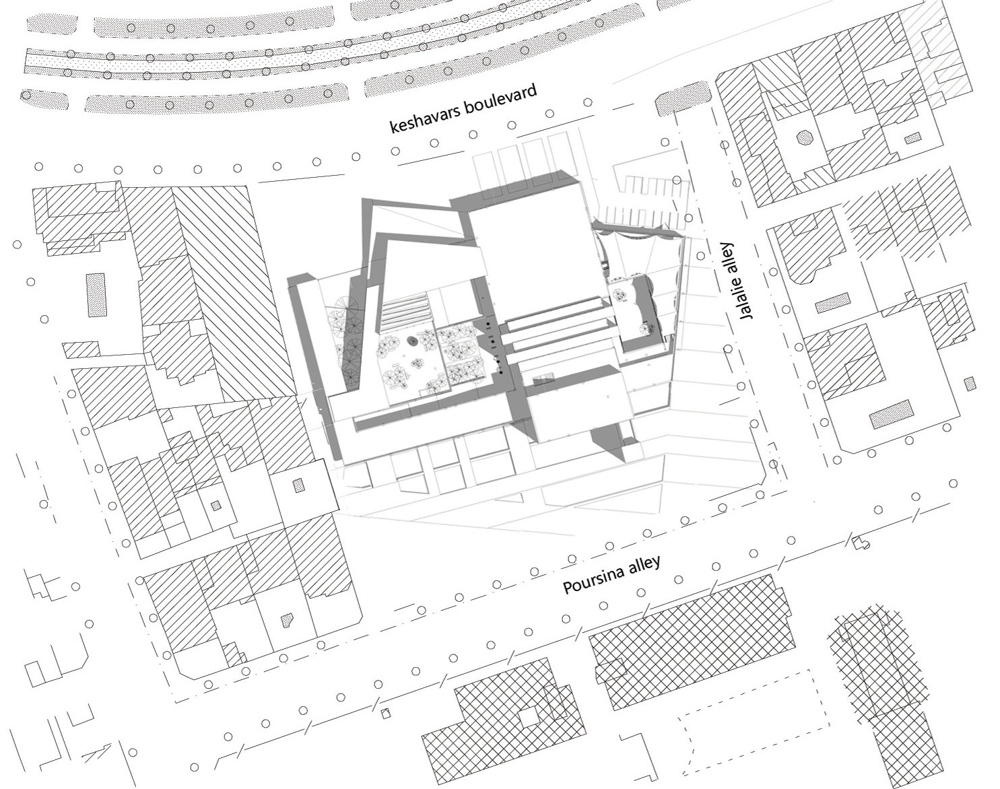
Collage
Collage, an exciting way of waking architects’ unconscious, offers different approaches to beginning a project rather than other conceptual methods. This method contains:
0. Initial research on psychological, educational and social aspects of users.
1. Making a collage from different types of pictures
2. Creating meaningful spaces by sketching from collages
3. Analyzing every collage based on the colors, lines, areas, lights etc.
4. A preliminary effort of creating every space’s quality in several etude models.
5. Extracting architectural drawings including plans.
6. Observing architectural proportions and adding the required parts that were not mentioned in the above sections.
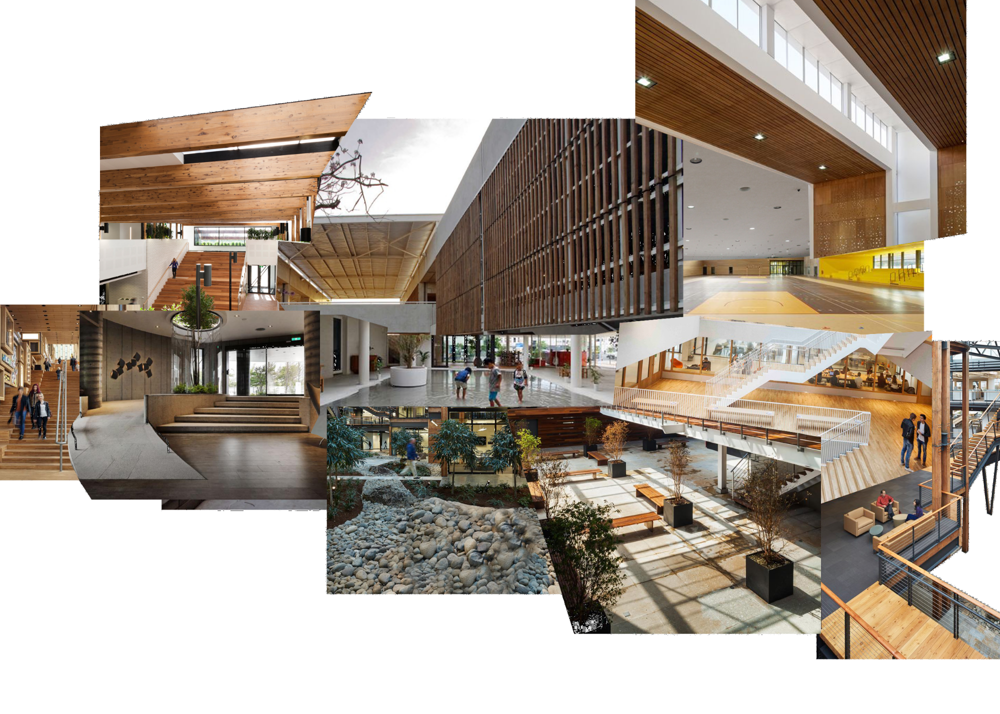
Collage N.1
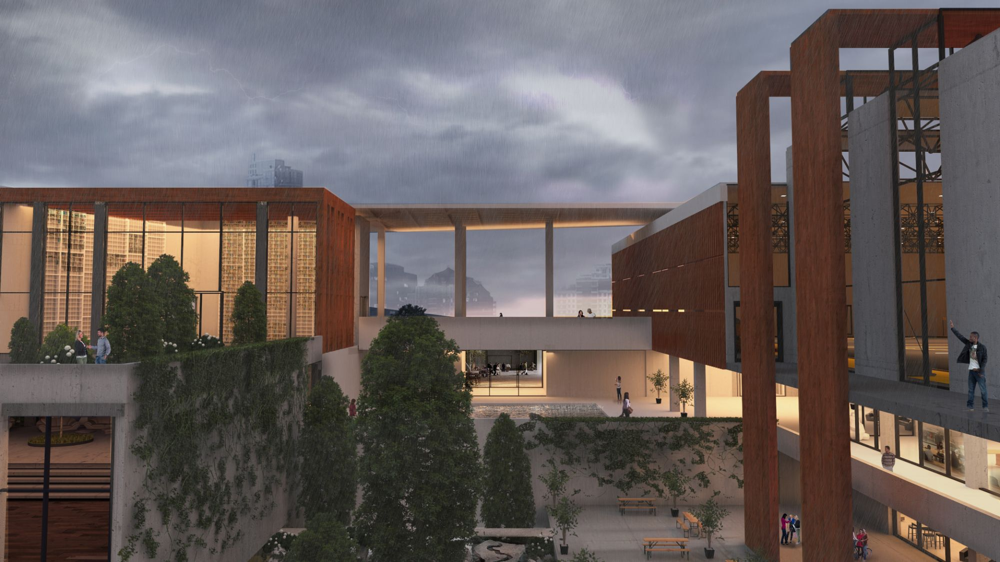
Central yard
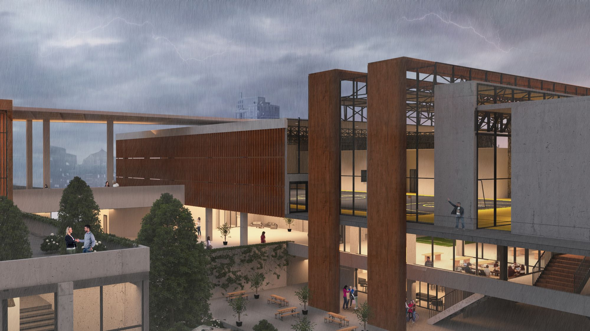
Central yard
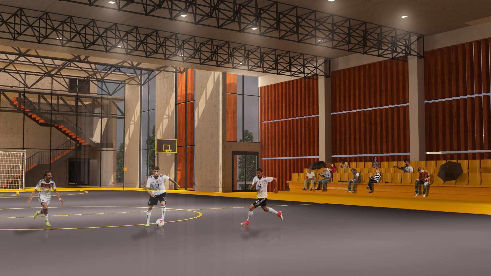
Stadium

Collage N.2

Main entrance
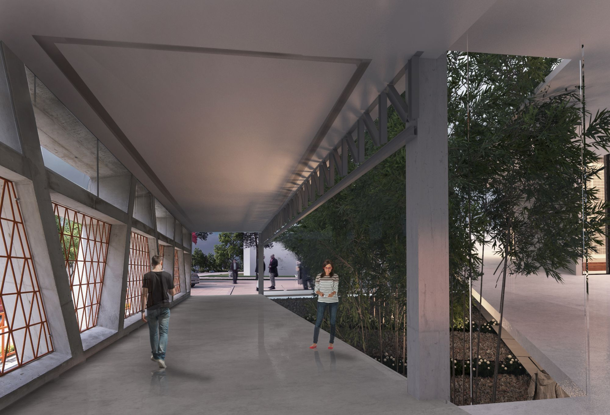
Third entrance
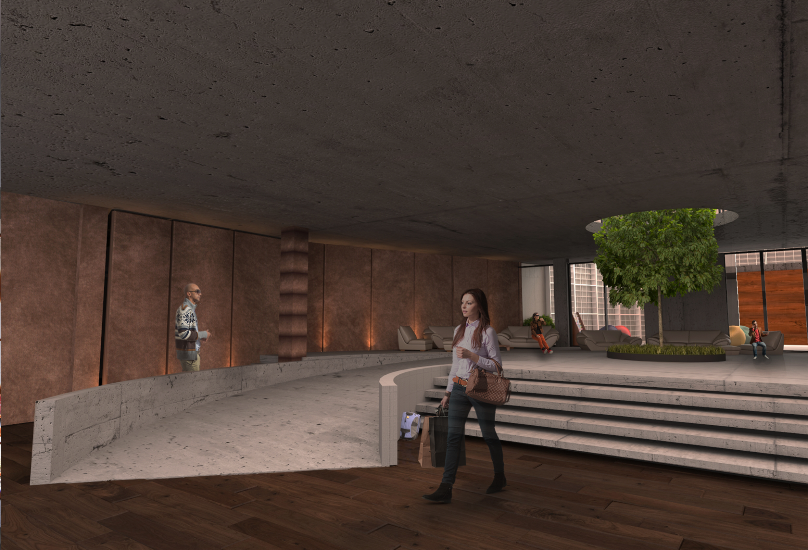
Second entrance
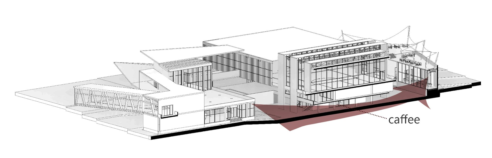
A pass beneath the complex, next to the coffee, links the main courtyard to the smaller one.
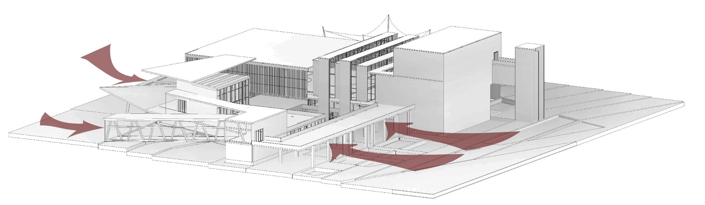
Three entries. A prime, extended one in the south facing the campus, and one in the north for students. And also one more formal entry for staff.
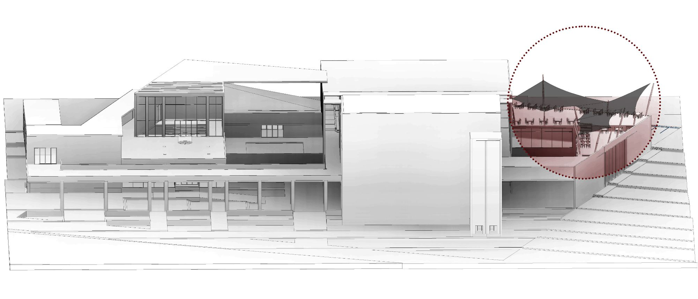
Using a specific, designed tent structure in the free space as the foodcourt’s membrane.
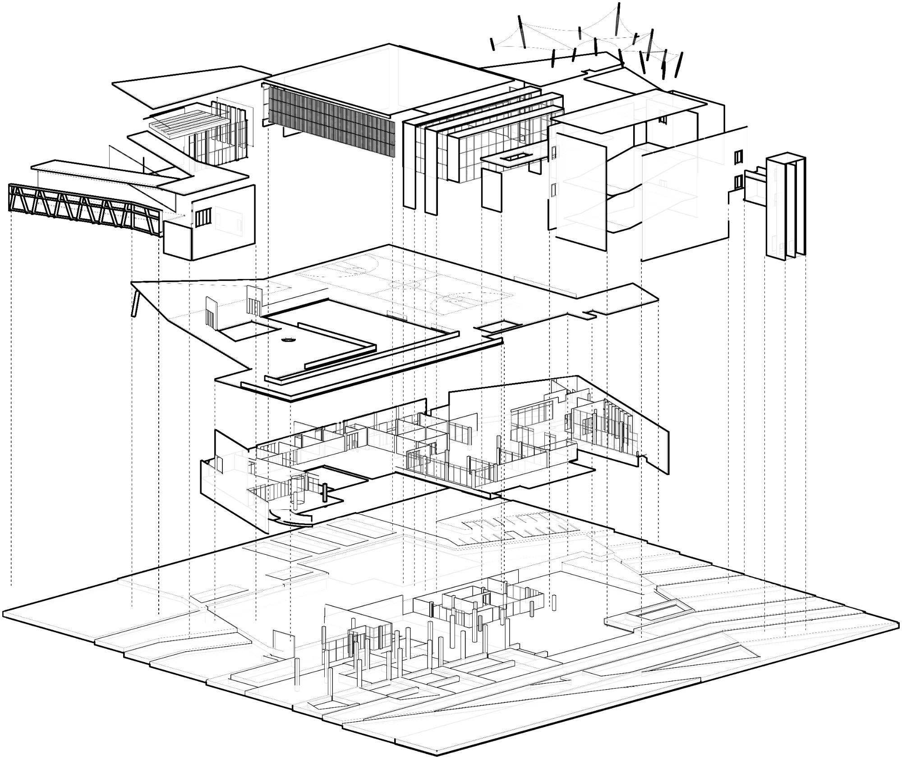
Ground Floor Plan
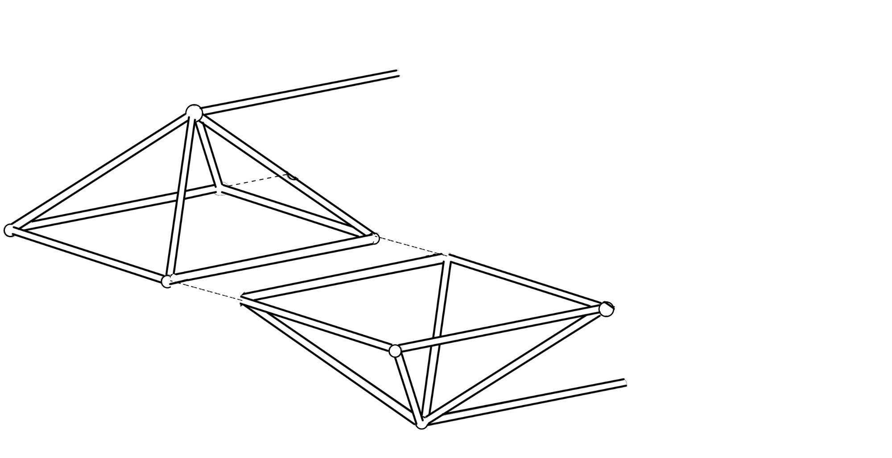
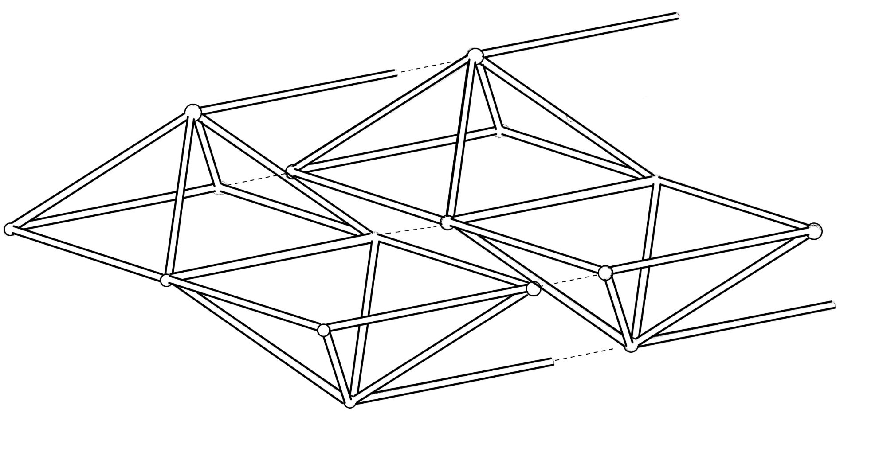
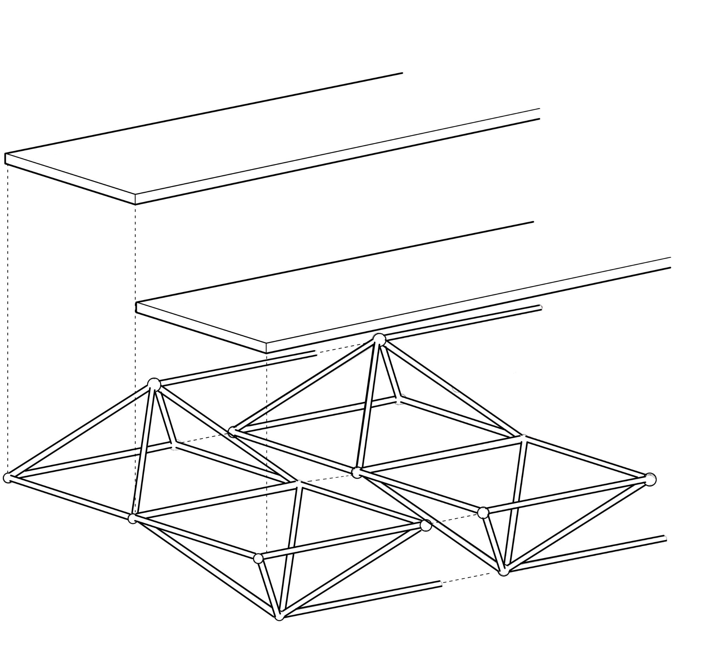
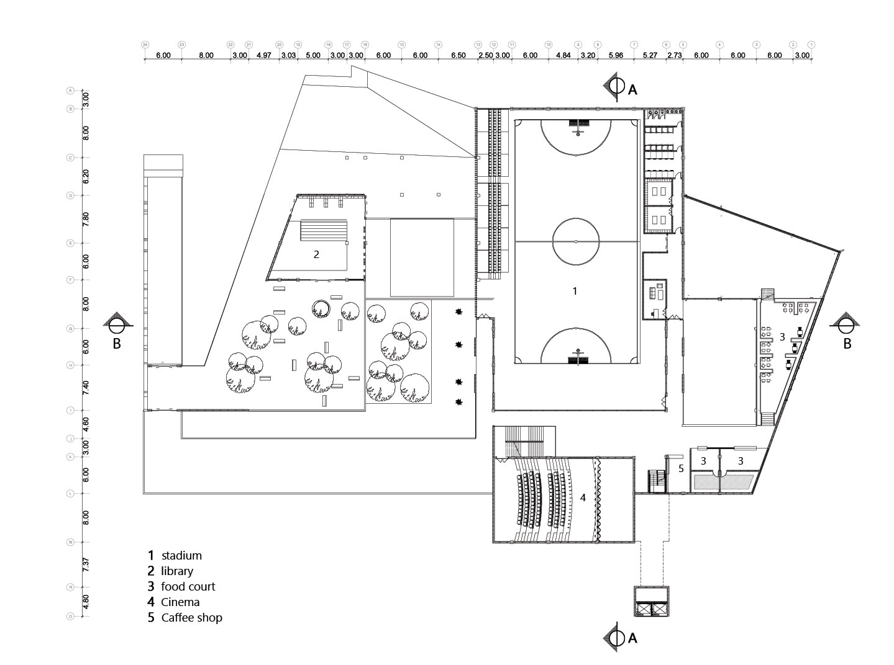
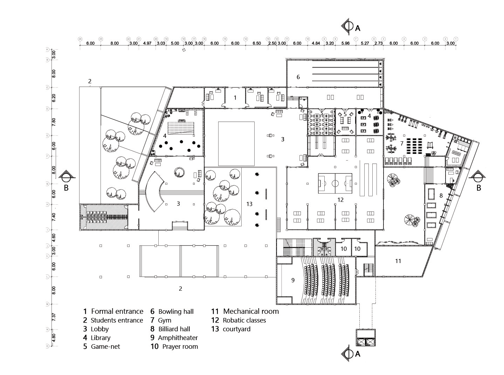